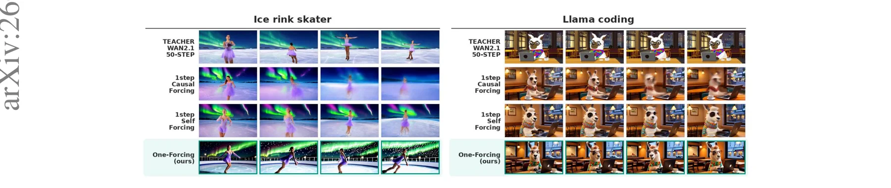
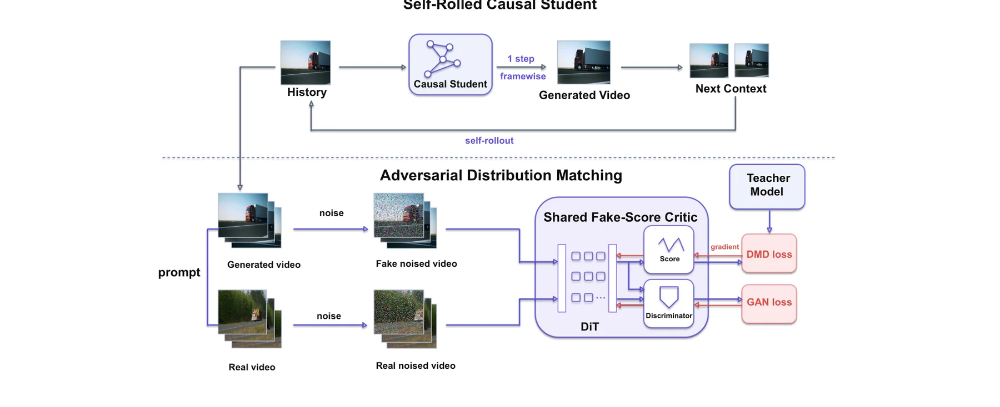
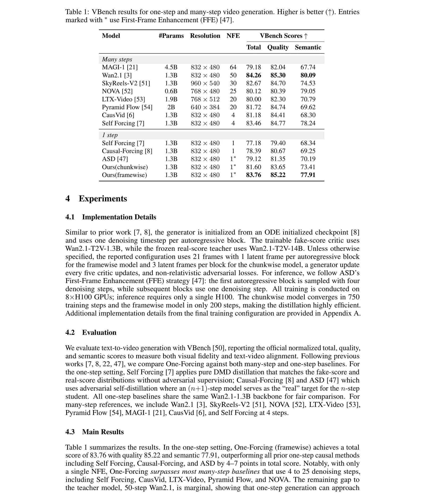
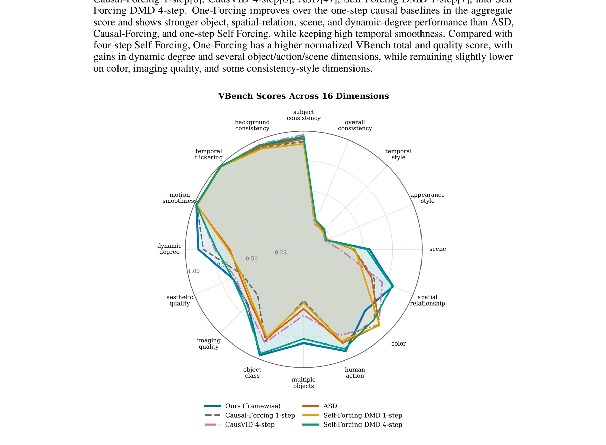
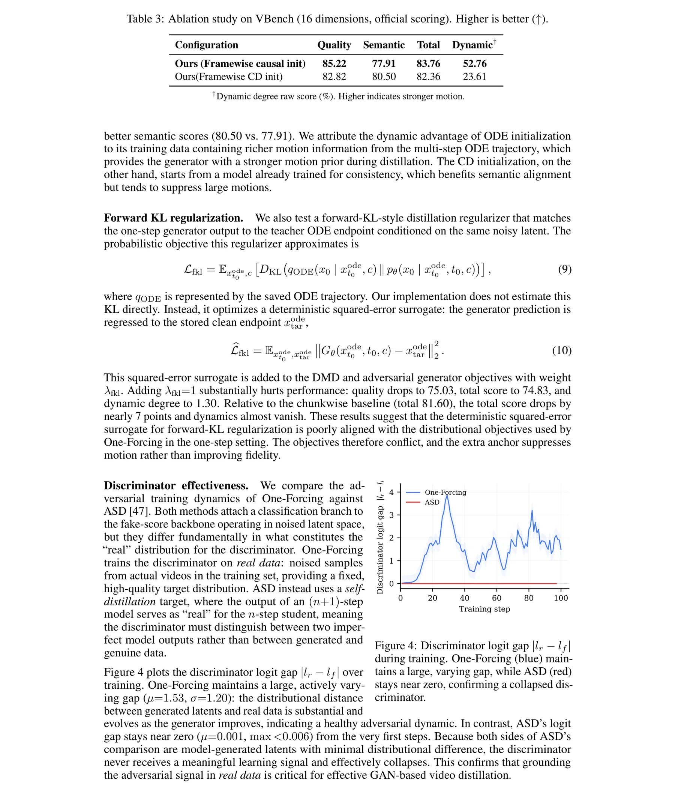
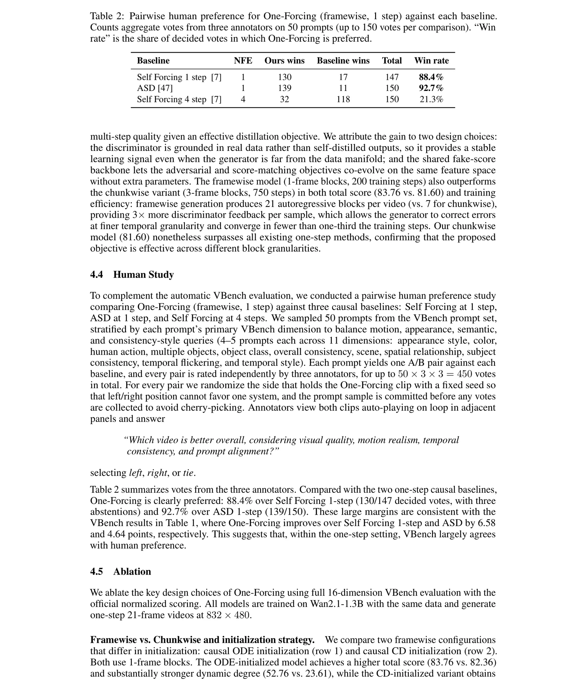
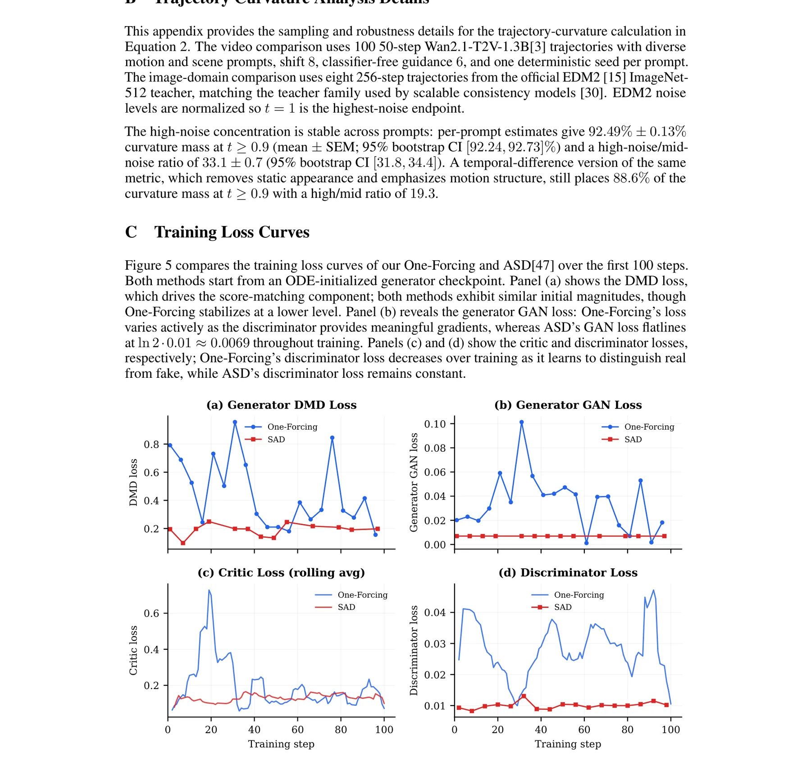

背景与动机：实时视频生成的单步瓶颈
扩散式视频生成在过去两年取得了惊人的进展。Sora、Veo、Wan、HunyuanVideo、Seedance 等双向模型能够合成视觉保真度极高、时空动态复杂的视频。然而，这些模型需要对整个序列进行联合去噪，计算成本随视频长度呈超线性增长，完全无法满足实时交互部署需求。
自回归视频生成器通过逐帧或逐短时块流式生成来解决这一限制，支持世界模拟和交互式游戏引擎等低延迟应用场景。但即使是当前最优秀的因果视频系统（如 Self Forcing、Causal Forcing），仍然需要每个块进行 4 步去噪。这个采样预算仍然是端到端延迟的主要瓶颈。核心问题是：当推向极致的单步设置时，因果视频生成器能否保持出色的视觉质量和运动动态？
现有方法在单步设置下的退化
论文首先系统地诊断了现有少步蒸馏方法在单步设置下的失败模式。轨迹式一致性蒸馏方法产生动态微弱的视频，而基于 DMD 的方法（如 Self Forcing）则倾向于产生模糊帧。这两种退化模式分别源于不同的根本原因。
轨迹式一致性蒸馏
症状：动态微弱
单步采样必须用一次跳跃逼近整个高噪声到数据的轨迹。视频教师轨迹在高噪声端有尖锐弯曲，单步逼近能力不足导致运动信息丢失。
Vanilla DMD (Self Forcing)
症状：帧模糊
DMD 的分数差异信号仅局部于当前生成的潜在变量。在自回归展开中，模糊的早期帧递归注入未来条件，导致误差累积放大。

从 4 步压缩到 2 步时，模型仍能在高噪声弯曲之后放置一个中间锚点来保持轨迹拟合质量。但 1 步设置要求单次前向传播完全跨越主导非线性区域。这不是"少一步"的问题，而是逼近范式的根本转变——从迭代修正到一次性映射。
几何障碍：视频教师轨迹的高噪声曲率集中
One-Forcing 的第一个核心贡献是揭示了单步视频蒸馏退化背后的几何本质。论文引入了一个定量指标来度量教师轨迹偏离直线（连接数据端和噪声端的弦）的程度。
轨迹曲率度量
对于相邻教师状态，定义逐坐标平方偏差：
其中 $t=0$ 和 $t=1$ 分别表示数据端和最高噪声端，$d$ 是潜在坐标数。$C(t_i)$ 度量局部教师速度与全局端点弦之间的偏离程度。
视频 vs 图像教师的曲率对比
SVG 1: 视频与图像教师轨迹的相对曲率分布对比。Wan2.1 视频轨迹在高噪声端（t>=0.9）呈现尖锐的曲率集中（峰值 1.25），而 EDM2 图像教师的曲率分布相对平坦。
曲率集中意味着轨迹在高噪声区域有剧烈的非线性弯曲。两步采样器可以在弯曲之后放置一个中间锚点来捕捉这种非线性，但单步采样器必须用一次线性跳跃来逼近整个主导非线性区域。这不是近似精度的问题，而是几何不可能性——就像用一条直线逼近一个急弯。
EDM2 图像教师的曲率分布没有可比的高噪声尖峰，因此图像一致性蒸馏可以轻松压缩到单步。这一对比揭示了视频生成独有的几何困难：时空建模的复杂性使得去噪轨迹在高噪声端产生剧烈弯曲，而图像生成的轨迹则相对平滑。
曲率分析代码实现
import torch
import numpy as np
def compute_trajectory_curvature(x0, x1, teacher, n_steps=48):
"""计算PF-ODE轨迹的逐点曲率分布。
核心思想：度量局部教师速度与全局端点弦之间的偏差。
偏差越大，说明轨迹越弯曲，单步逼近越困难。
Args:
x0: 干净数据 [B, C, T, H, W]
x1: 高斯噪声 [B, C, T, H, W]
teacher: 教师扩散模型 v_theta
n_steps: ODE求解步数（论文用48步）
Returns:
curvatures: 每个时间步的曲率值 [n_steps-1]
timesteps: 对应的归一化时间步
"""
ts = torch.linspace(1, 0, n_steps + 1)
# 沿PF-ODE轨迹采样中间状态
trajectory = []
for t in ts:
xt = (1 - t) * x0 + t * x1 # 线性插值
trajectory.append(xt)
# 全局弦速度: x1 -> x0 方向
chord_velocity = trajectory[-1] - trajectory[0]
curvatures = []
for i in range(1, len(trajectory)):
dt = ts[i] - ts[i-1]
local_vel = (trajectory[i] - trajectory[i-1]) / dt
# 逐坐标平方偏差（归一化）
curvature = torch.mean((local_vel - chord_velocity)**2)
curvatures.append(curvature.item())
# 归一化到峰值
curvatures = np.array(curvatures)
curvatures_norm = curvatures / curvatures.max()
# 验证：Wan2.1视频教师92.5%曲率集中在t>=0.9
high_noise_mask = ts[1:].numpy() >= 0.9
ratio = curvatures_norm[high_noise_mask].sum() / curvatures_norm.sum()
print(f"高噪声端(t>=0.9)曲率占比: {ratio*100:.1f}%")
return curvatures_norm, ts[1:].numpy()Vanilla DMD 的局限性：局部信号的递归放大
虽然 DMD 绕过了轨迹曲率问题（因为它不依赖特定的教师路径），但它引入了一个在自回归视频中尤为致命的新问题：局部性。在单步图像生成中，局部性问题并不严重，因为模型只产生一个终态样本。但在自回归视频中，每个预测的潜在块都会被反馈到因果 KV 缓存中，成为所有后续块的条件上下文。
DMD 的反向 KL 梯度估计
DMD 用 $s_\phi - s_{\text{real}}$ 在加噪样本上实现此梯度。关键困难在于：此信号仅局部于当前生成的潜在变量。
误差的递归放大机制
SVG 2: Vanilla DMD 的局部性在自回归视频中的递归放大效应。每个模糊帧通过 KV 缓存成为后续帧的条件，误差指数级累积。
DMD 通过跳过复杂的中间 ODE 路径来绕过曲率问题，直接匹配生成分布。但这种"绕过"恰恰导致了局部性——因为不经过轨迹的中间状态，DMD 的梯度信号只在当前生成样本的邻域内有效。在单步图像生成中这不是问题（只有一个终态），但在 AR 视频中每个样本都是后续样本的条件。
AR 视频生成对分布级真实性的要求远高于图像 DMD 或图像对抗蒸馏。我们需要的不仅仅是"在学生展开分布周围拟合假分数"的局部校正，而是一个能够明确拒绝全局可区分样本的判别器。这就是 One-Forcing 引入对抗分支的根本动机。
DMD 局部性分析代码
def dmd_locality_analysis(generator, real_score, fake_score, prompt, n_frames=21):
"""分析DMD局部信号在帧级自回归展开中的递归放大。
核心问题：DMD的分数差异信号仅局部于当前生成的潜在变量，
但在AR展开中，每个预测的潜在帧都会被反馈到KV缓存中，
成为后续所有帧的条件上下文。误差逐帧累积放大。
Returns:
errors: 每帧的局部DMD误差
accumulated: 累积误差（考虑KV缓存传播）
"""
kv_cache = None
errors = []
accumulated = 0
for frame_idx in range(n_frames):
# 单步生成当前帧（framewise设置）
x_gen, kv_cache = generator.generate_frame(
prompt, kv_cache=kv_cache, n_steps=1
)
# DMD分数差异（局部信号）
t = torch.rand(1)
x_noisy = add_noise(x_gen, t)
score_diff = fake_score(x_noisy, t) - real_score(x_noisy, t)
# 局部误差度量
local_error = torch.norm(score_diff).item()
errors.append(local_error)
# 关键：误差通过KV缓存递归传播
# 当前帧的误差影响所有后续帧
remaining = n_frames - frame_idx
accumulated += local_error * remaining
print(f"总累积误差: {accumulated:.4f}")
print(f"误差增长率: {errors[-1]/errors[0]:.2f}x")
return errors, accumulated
# 预期：误差随帧数递增，展示递归放大效应
# 这正是One-Forcing引入对抗判别器的根本原因One-Forcing：联合分数匹配与对抗判别
基于上述两大发现，One-Forcing 提出了一个简洁而有效的解决方案：将可训练的假分数网络转变为联合扩散判别器和加噪潜在判别器。核心创新在于复用假分数骨干网络作为判别器，无需额外网络开销。
整体训练框架

联合分数与对抗判别器
One-Forcing 保持两个分数网络。真分数 $s_{\text{real}}$ 是冻结的双向教师模型（Wan2.1-T2V-14B）。假分数 $s_\phi$ 是可训练的单步自回归模型（Wan2.1-T2V-1.3B）。
其中 $\ell_{\text{denoise}}$ 是流匹配目标，训练 $s_\phi$ 从加噪样本 $x_t$ 预测速度目标 $\epsilon - x_\theta$。
将假分数与真分数的差异通过 stop-gradient 传递给生成器，实现分布匹配。
对抗分支设计
对抗分支在假分数 Transformer 上添加少量可学习的寄存器 token。对于每个选定的 Transformer 层，一个寄存器 token 作为轻量注意力块的查询，对该层的潜在 token 进行交叉注意力，产生紧凑的逐层判别特征。所有选定层的特征拼接后通过 MLP 头产生标量真假 logit。
真实样本 $x_{\text{real}}$ 来自数据集，假样本 $x_\theta$ 来自当前单步因果生成器，两者都在判别器时间步 $t$ 处加噪。
交替更新：每 K=5 步更新一次生成器，每步都更新判别器。$\lambda_G = \lambda_D = 0.03$。
共享架构可视化
SVG 3: One-Forcing 的共享架构设计。假分数网络同时作为去噪器和判别器，对抗信号基于真实数据而非自蒸馏输出。
假分数网络同时扮演去噪器（通过流匹配损失）和判别器（通过对抗分支）两个角色。这种设计不仅是参数效率的考量，更是一种隐式正则化：判别器在与生成器相同的潜在特征空间中学习，避免了独立判别器可能引入的分布偏移。两个目标可以协同进化，去噪能力帮助判别器理解"好的生成"是什么样的。
One-Forcing 训练算法
import torch
import torch.nn.functional as F
class OneForcingTrainer:
"""One-Forcing: 联合DMD + 对抗训练的单步AR视频蒸馏。
核心设计：
1. 生成器 G_theta: 单步因果展开，1 latent frame/block
2. 假分数 s_phi: 可训练，同时作为去噪器和判别器骨干
3. 真分数 s_real: 冻结的双向教师 (Wan2.1-14B)
4. 对抗头 D_phi: 基于寄存器token的加噪潜在判别器
"""
def __init__(self, generator, fake_score, real_score,
lambda_g=0.03, lambda_d=0.03, K=5):
self.G = generator # Wan2.1-1.3B causal
self.s_phi = fake_score # Wan2.1-1.3B trainable
self.s_real = real_score # Wan2.1-14B frozen
self.lambda_g = lambda_g
self.lambda_d = lambda_d
self.K = K # 生成器更新间隔
def train_step(self, i, batch):
# === 判别器更新（每步） ===
prompt, x_real = batch
# 无生成器梯度的假样本
x_fake = self.G(prompt, n_steps=1).detach()
# 假分数去噪损失
t = torch.rand(1) * 1000
sigma_t = 5 * (t/1000) / (1 + 4 * t/1000)
x_fake_noisy = (1 - sigma_t) * x_fake + sigma_t * torch.randn_like(x_fake)
L_fake = flow_denoise_loss(self.s_phi, x_fake_noisy, x_fake, t)
# 对抗判别损失（基于真实数据）
x_real_noisy = (1 - sigma_t) * x_real + sigma_t * torch.randn_like(x_real)
L_adv_D = (F.softplus(-self.s_phi.discriminate(x_real_noisy, t)) +
F.softplus(self.s_phi.discriminate(x_fake_noisy, t)))
loss_phi = L_fake + self.lambda_d * L_adv_D
loss_phi.backward()
# === 生成器更新（每K步） ===
if i % self.K == 0:
x_fake = self.G(prompt, n_steps=1)
x_fake_noisy = (1 - sigma_t) * x_fake + sigma_t * torch.randn_like(x_fake)
# DMD损失（stop-gradient形式）
score_diff = self.s_phi(x_fake_noisy, t) - self.s_real(x_fake_noisy, t)
L_DMD = 0.5 * ((x_fake - (x_fake - score_diff).detach())**2).mean()
# 对抗生成损失
L_adv_G = F.softplus(-self.s_phi.discriminate(x_fake_noisy, t))
loss_G = L_DMD + self.lambda_g * L_adv_G
loss_G.backward()训练细节与实现配置
One-Forcing 的实现基于 Causal Forcing 代码库和 Wan2.1 模型家族。本章详细解读关键的训练超参数和实现选择。
模型配置
| 配置项 | 值 | 说明 |
|---|---|---|
| 生成器初始化 | ODE-trained Causal model | 从 Causal Forcing 的因果 ODE 初始化检查点出发 |
| 生成器 / 真分数 / 假分数 | 1.3B / 14B / 1.3B | 真分数冻结为双向14B教师 |
| 训练帧数 | 21 latent frames | 16 x 60 x 104 per frame |
| 每块帧数 | 1 (framewise) / 3 (chunkwise) | framewise 提供 3x 判别器反馈 |
| CFG 引导尺度 | 5.0 (生成器+真分数) / 0.0 (假分数) | 假分数不使用 CFG |
| 噪声调度 | shift factor 5.0 | 1000 训练时间步 |
| 更新调度 | K=5 | 每5次判别器更新对应1次生成器更新 |
| 优化器 | AdamW | beta1=0, beta2=0.999, wd=0.01 |
| 学习率 | 1.0e-5 | 生成器和假分数共享 |
| GAN 分支 | Layer {21, 29} | 2 registers, 1536 dim, 2048 FFN, 12 heads |
| GAN 损失权重 | lambda_G = lambda_D = 0.03 | 非饱和 logistic 损失 |
| EMA | decay 0.99 | 从第50步开始 |
| 硬件 | 8 x H100 | FSDP + gradient checkpointing |
生成器每 5 步更新一次的设计遵循了 DMD2 的两时间尺度直觉。判别器需要比生成器更频繁地更新，以保持对生成器变化的追踪能力。如果两者同步更新，判别器可能无法及时适应生成器的快速变化，导致训练不稳定。
推理配置
第一个自回归块使用 4 步预热调度初始化 KV 缓存（遵循 ASD 的 FFE 策略），后续块使用 1 步去噪。视频在 832 x 480 分辨率和 16 FPS 下解码。推理仅需单张 H100。
首个 AR 块使用 4 步而非 1 步，是因为 KV 缓存的初始化质量决定了整个视频的基调。后续帧有条件可循（KV 缓存已建立），因此 1 步即可。这种非对称推理策略以极小的额外成本（仅首帧 4 步）换取了显著的质量提升。
噪声调度实现
import torch
def one_forcing_noise_schedule(t, k=5.0):
"""One-Forcing 的 shifted 噪声调度。
遵循 Wan2.1 的 flow-matching 调度器。
shift factor k=5 将更多权重分配给高噪声区域，
与视频轨迹的高噪声曲率集中特性匹配。
"""
t_normalized = t / 1000 # t in [0, 1000]
sigma_t = k * t_normalized / (1 + (k - 1) * t_normalized)
return sigma_t
def forward_corruption(x0, sigma_t, epsilon):
"""前向加噪过程：x_t = (1-sigma_t)*x0 + sigma_t*epsilon"""
return (1 - sigma_t) * x0 + sigma_t * epsilon
def velocity_to_clean(xt, sigma_t, v_theta):
"""从速度预测转换为干净潜在估计：x_hat = x_t - sigma_t * v_theta"""
return xt - sigma_t * v_theta
# 使用示例
t = torch.randint(0, 1000, (1,))
sigma_t = one_forcing_noise_schedule(t)
xt = forward_corruption(x0, sigma_t, epsilon)
v_pred = model(xt, t, prompt) # flow-prediction target: epsilon - x0
x0_hat = velocity_to_clean(xt, sigma_t, v_pred)实验结果：单步 SOTA 与多步方法竞争
关键指标一览
VBench 主要结果

| 模型 | 参数量 | NFE | 总分 | 质量 | 语义 |
|---|---|---|---|---|---|
| 多步方法 | |||||
| Wan2.1 (教师) | 1.3B | 50 | 84.26 | 85.30 | 80.09 |
| Self Forcing 4-step | 1.3B | 4 | 83.46 | 84.77 | 78.24 |
| CausVid | 1.3B | 4 | 81.18 | 84.41 | 68.30 |
| 单步方法 | |||||
| Self Forcing 1-step | 1.3B | 1 | 77.18 | 79.40 | 68.34 |
| Causal-Forcing | 1.3B | 1 | 78.39 | 80.67 | 69.25 |
| ASD | 1.3B | 1* | 79.12 | 81.35 | 70.19 |
| One-Forcing (chunkwise) | 1.3B | 1* | 81.60 | 83.65 | 73.41 |
| One-Forcing (framewise) | 1.3B | 1* | 83.76 | 85.22 | 77.91 |
Framewise 模型（1帧/块，200 步训练）不仅在总分上超越 chunkwise（3帧/块，750 步），而且训练效率更高。原因在于：framewise 生成每视频产生 21 个自回归块（vs. chunkwise 的 7 个），每个样本提供 3 倍更多的判别器反馈，使生成器能在更细的时间粒度上纠正错误，在不到 1/3 的训练步数内收敛。
与教师模型的差距分析
SVG 4: One-Forcing (framewise, 1步) 与 50 步教师模型仅差 0.5 分，同时超越所有 4 步方法。
从 Self Forcing 4 步（83.46）到 One-Forcing 1 步（83.76），单步方法首次在 VBench 上超越多步方法。这不是渐进式改进，而是范式转换：通过正确的分布匹配目标，单步生成不再是对多步的妥协，而是一种独立的、可竞争的生成范式。核心在于 0.5 分的教师差距意味着分布匹配已经非常充分。
VBench 全维度分析

One-Forcing 的优势主要体现在动态度（52.76 vs ASD 的较低值）和物体/场景维度上。这与对抗信号的设计直接相关：基于真实数据的判别器能更好地捕捉全局视频质量，而不仅仅是局部分数匹配。在颜色、成像质量等维度上，4 步 Self Forcing 仍有微弱优势，说明多步采样在精细视觉属性上仍有价值。
消融研究：设计选择的深入分析
初始化策略对比
ODE 初始化 (Framewise)
总分: 83.76 | 动态度: 52.76%
训练数据包含更丰富的运动信息（多步 ODE 轨迹），为生成器提供更强的运动先验。语义对齐 77.91。
CD 初始化 (Framewise)
总分: 82.36 | 动态度: 23.61%
从已训练的一致性模型出发，有利于语义对齐（80.50）但倾向于抑制大运动。

ODE 初始化在动态度上大幅领先（52.76 vs 23.61），因为 ODE 轨迹包含多步去噪过程中的丰富运动信息。CD 初始化虽然动态度较低，但在语义对齐上更优（80.50 vs 77.91）。这揭示了一个根本性权衡：运动丰富性与语义精确性之间的张力。ODE 初始化的多步轨迹提供了更强的运动先验，但 CD 初始化的端点回归更利于语义保真。
Forward KL 正则化的灾难性影响
警告：Forward KL 正则化与 One-Forcing 目标严重冲突
添加 $\lambda_{\text{fkl}}=1$ 的 forward KL 正则化导致质量暴跌至 75.03（-10.19），总分降至 74.83（-8.93），动态度几乎消失（1.30 vs 52.76）。确定性平方误差代理与分布目标严重不兼容。
此代理将生成器预测回归到存储的清洁端点。但确定性回归与 DMD 的分布匹配目标和对抗训练目标产生严重冲突，抑制了运动多样性。
Forward KL 正则化本质上是让生成器回归到教师 ODE 的确定性端点——这相当于模式寻求的反面。DMD 和 GAN 鼓励生成器探索数据分布的多样性，而 Forward KL 则将其锚定在单一点上。两者的梯度方向互相矛盾，导致运动多样性被压制。这说明在单步蒸馏中，分布目标和确定性目标不能简单混合。
判别器有效性分析
SVG 5: One-Forcing vs ASD 的判别器动态对比。基于真实数据的判别是有效对抗蒸馏的关键前提。
ASD 使用 $(n+1)$ 步模型的输出作为 $n$ 步学生的"真实"目标。判别器必须区分两个不完美模型的输出，而不是区分生成和真实数据。由于两边都是模型生成的潜在变量，分布差异极小（logit 差距 max \lt 0.006），判别器从未获得有意义的学习信号，从第一步起就坍塌了。这不是实现细节问题，而是结构性缺陷。
判别器动态监控代码
import torch
import numpy as np
def monitor_discriminator_health(discriminator, real_loader, generator,
n_samples=100):
"""监控判别器 logit 差距以诊断对抗训练健康度。
One-Forcing: mu=1.53, sigma=1.20 (健康)
ASD: mu=0.001, max<0.006 (坍塌)
判别器坍塌的诊断标准：
- logit差距持续接近零 → 判别器无法区分真假
- 无变化趋势 → 对抗动态停滞
"""
logit_gaps = []
for i, (prompt, x_real) in enumerate(real_loader):
if i >= n_samples: break
# 生成假样本（无梯度）
x_fake = generator(prompt, n_steps=1).detach()
# 在随机时间步加噪
t = torch.rand(1) * 1000
sigma = 5 * (t/1000) / (1 + 4 * t/1000)
x_real_noisy = (1-sigma)*x_real + sigma*torch.randn_like(x_real)
x_fake_noisy = (1-sigma)*x_fake + sigma*torch.randn_like(x_fake)
# 计算logit
l_real = discriminator(x_real_noisy, t, prompt).mean()
l_fake = discriminator(x_fake_noisy, t, prompt).mean()
logit_gaps.append(abs(l_real - l_fake).item())
gaps = np.array(logit_gaps)
print(f"Logit gap: mu={gaps.mean():.3f}, sigma={gaps.std():.3f}")
print(f"Range: [{gaps.min():.4f}, {gaps.max():.4f}]")
# 健康诊断
if gaps.mean() < 0.01:
print("WARNING: 判别器可能已坍塌！")
print("建议：确保判别器基于真实数据而非自蒸馏")
return gaps人类评估与训练动态
成对人类偏好研究
论文进行了严格的成对人类偏好研究，比较 One-Forcing (framewise, 1步) 与三个因果基线。从 VBench 提示集中分层采样 50 个提示，每个提示产生一个 A/B 对，每个对由三位标注者独立评分，总计最多 450 票。

| 基线 | NFE | One-Forcing 胜 | 基线胜 | 胜率 |
|---|---|---|---|---|
| Self Forcing 1-step | 1 | 130 | 17 | 88.4% |
| ASD | 1 | 139 | 11 | 92.7% |
| Self Forcing 4-step | 4 | 32 | 118 | 21.3% |
One-Forcing 在单步设置下对 Self Forcing 1-step 和 ASD 的人类偏好胜率（88.4% 和 92.7%）与 VBench 分数差距（6.58 和 4.64 分）高度一致。这表明 VBench 在单步视频生成评估中是人类偏好的可靠代理。值得注意的是，One-Forcing 1步对 Self Forcing 4步的胜率仅为 21.3%，说明多步采样在整体质量上仍有优势，但差距已大幅缩小。
训练损失曲线分析

One-Forcing 训练动态
DMD 损失稳定在较低水平。GAN 损失活跃变化，判别器提供有意义梯度。判别器损失随训练下降，证明学习到了区分真假的能力。
ASD 训练动态
GAN 损失从第一步起就平坦在 ln2*0.01 约 0.0069。判别器损失恒定不变。确认判别器信号从训练开始就已坍塌。
方法论定位图
SVG 6: 方法论定位图。One-Forcing 在单步效率下达到了接近 50 步教师的质量，实现了质量-效率的帕累托前沿突破。
开放科研问题与未来方向
能否将曲率分析推广到自适应步长调度？
论文发现 92.5% 的曲率集中在高噪声端。是否可以利用此几何信息设计自适应步长调度：在高曲率区域分配更多去噪步数（如 2-4 步），在平滑区域使用单步？这可能在质量-效率之间取得更好的帕累托前沿。理论分析方向：曲率阈值与步数分配的最优映射关系是什么？是否可以训练一个轻量路由器来预测每个区域的最优步数？
共享判别器骨干是否限制了判别器容量？
One-Forcing 复用假分数骨干作为判别器，避免了额外参数。但这种设计是否限制了判别器的表达能力？独立的加噪潜在判别器（如更大的 Transformer 或专门的判别架构）能否带来进一步提升？调查方向：(1) 增加寄存器 token 数量和层数的边际收益；(2) 独立判别器 vs 共享判别器在不同生成质量阶段的有效性差异；(3) 参数开销与性能增益的定量权衡曲线。
对抗信号能否替代 DMD 中的真分数网络？
One-Forcing 同时使用 DMD 分数差异和对抗信号。在极限情况下，纯对抗训练（移除真分数网络）能否达到类似效果？这可以进一步简化训练流程并减少内存占用（释放 14B 教师的显存）。理论问题：对抗信号是否已经隐式包含了分布匹配信息？DMD 和 GAN 梯度的互补性有多大？消融实验建议：逐步降低 lambda_G 观察质量变化曲线。
如何将 One-Forcing 扩展到更长视频和更高分辨率？
论文在 21 帧、832x480 设置下验证了方法。扩展到分钟级长视频和 1080p 分辨率时，判别器的记忆效率和自回归误差累积会如何变化？调查方向：(1) 分层判别策略——局部帧级判别器 + 全局视频级判别器的组合；(2) 滑动窗口判别器以控制显存开销；(3) 与高效注意力机制（如 Ring Attention）的结合；(4) 更大骨干（14B）对一步质量的提升幅度。
Register Token 的最优设计空间是什么？
论文使用 2 个寄存器 token 和 2 个选定层（{21, 29}）。寄存器 token 的最优数量、放置层的选择策略、以及注意力机制的类型（交叉注意力 vs 自注意力 vs 线性注意力）如何影响判别器的有效性？理论分析：寄存器 token 本质上是对 Transformer 中间特征的低秩投影，其最优秩与生成器能力的关系值得探索。实验建议：在 {8, 16, 24, 32} 层的子集上进行系统搜索。
One-Forcing 最深刻的贡献可能不是具体的技术方案，而是揭示了一个通用的设计原则：对抗蒸馏中的判别器必须锚定在真实数据上。这一原则不仅适用于视频生成，也可能对图像蒸馏（如 SDXL 蒸馏）、文本生成（如 LLM 对齐）等领域的对抗训练设计有指导意义。自蒸馏判别器的坍塌是一种结构性缺陷，而非实现细节问题。
One-Forcing 的方法论启示
SVG 7: One-Forcing 的三大方法论启示——几何洞察决定目标选择，数据锚定保证训练稳定，共享骨干实现高效复用。
总结与启示
One-Forcing 通过将 DMD 分数匹配与对抗判别统一于同一假分数骨干网络，优雅地解决了单步自回归视频生成的两大障碍：视频轨迹的高噪声曲率集中和 DMD 的局部性递归放大问题。
核心创新
共享假分数骨干作为联合去噪器和判别器。基于真实数据的对抗信号提供全局拒绝机制。零额外参数开销。
关键发现
视频轨迹 92.5% 曲率集中在高噪声端。自蒸馏判别器（ASD）必然坍塌。Forward KL 与分布目标冲突。
实践成果
VBench 83.76（单步 SOTA）。200 步收敛（1/3 训练成本）。与 50 步教师仅差 0.5 分。
One-Forcing 最重要的贡献可能不是具体的技术方案，而是揭示了一个更深层的设计原则：对抗蒸馏中的判别器必须锚定在真实数据上。自蒸馏方法（如 ASD）的判别器坍塌不是实现细节问题，而是结构性缺陷。这一洞察对整个扩散蒸馏领域都有启发意义。
从 Self Forcing 4 步（83.46）到 One-Forcing 1 步（83.76），单步方法首次在 VBench 上超越多步方法。这不是渐进式改进，而是范式转换：通过正确的分布匹配目标，单步生成不再是对多步的妥协，而是一种独立的、可竞争的生成范式。这一结果表明，采样步数与生成质量之间的传统线性关系可以被打破。
未来方向
论文指出了几个有前景的未来方向：(1) 将 One-Forcing 扩展到更高分辨率和更长视频生成；(2) 结合高效注意力机制和更大骨干架构；(3) 探索自适应步长调度；(4) 扩展到动作条件视频生成以支持更快的交互式世界建模。